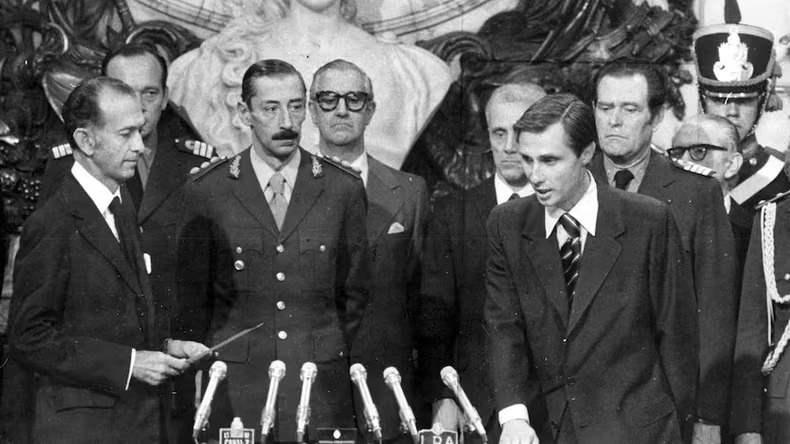
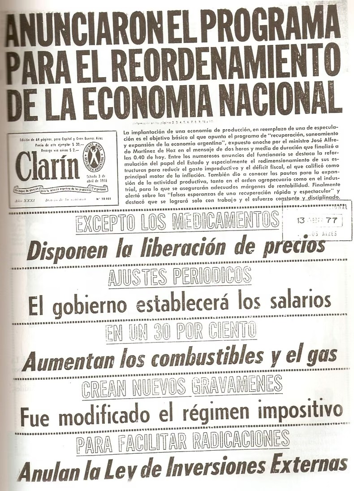
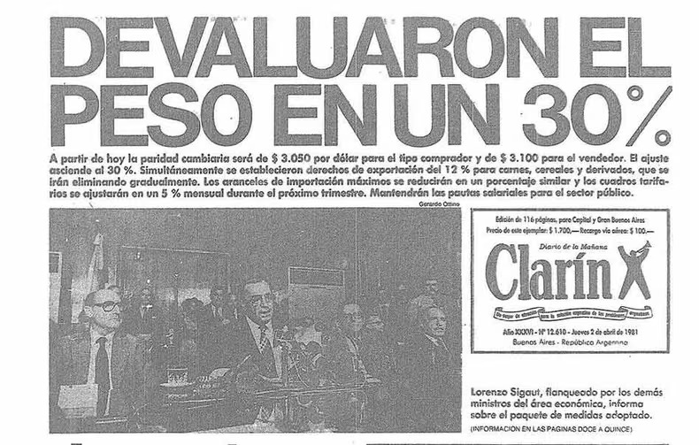
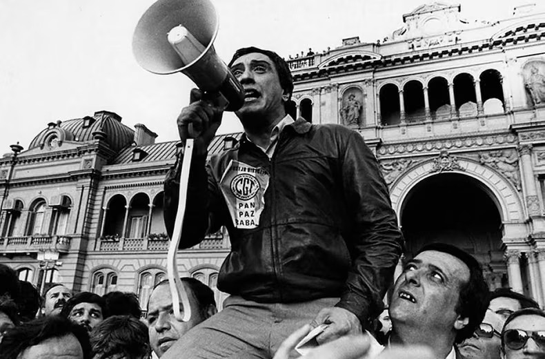

1. Introducción
La ultima dictadura militar no busco solamente imponer un regimen politico autoritario, sino tambien transformar profundamente la economia argentina. Para lograrlo, concentro el poder, elimino derechos democraticos y reprimio a los sectores sociales que podian oponerse a sus medidas, especialmente a la clase trabajadora.
Su objetivo fue abandonar el modelo de industrializacion por sustitucion de importaciones (ISI), que protegia la industria nacional, y reemplazarlo por un nuevo modelo basado en la valorizacion financiera, que favorecia a los grandes grupos economicos y al capital extranjero.

2. Politicas implementadas
En 1976, Jose Alfredo Martinez de Hoz asumio como ministro de Economia e impulso tres medidas principales.
Apertura economica: se redujeron los impuestos a las importaciones, lo que facilito el ingreso de bienes extranjeros y perjudico a las industrias nacionales.
Desregulacion financiera: se liberaron las tasas de interes y los movimientos de capitales, favoreciendo la especulacion a traves de los bancos en lugar de la inversion productiva.
Politica cambiaria: mediante la llamada tablita se establecieron devaluaciones graduales del peso, lo que favorecio las importaciones y la especulacion financiera.
La bicicleta financiera
Estas medidas impulsaron la llamada bicicleta financiera. Los inversores ingresaban dolares, los convertian en pesos, obtenian grandes ganancias mediante los intereses y luego volvian a convertirlos en dolares para sacarlos del pais.
Endeudamiento y fuga de capitales
Para sostener este mecanismo, Argentina recurrio cada vez mas al endeudamiento externo. La deuda paso de aproximadamente 8.500 millones de dolares en 1979 a 45.000 millones en 1983.
A esto se sumo una importante fuga de capitales hacia el exterior, que debilito la economia nacional. Numerosas empresas publicas tambien fueron obligadas a endeudarse.
Finalmente, el Estado absorbio parte de las deudas privadas de grandes empresas mediante su estatizacion, trasladando esas perdidas al conjunto de la sociedad.

3. Cambios realizados y consecuencias
El nuevo modelo economico provoco profundas consecuencias sociales y productivas.
Desindustrializacion: cerraron aproximadamente 20.000 pymes y se perdieron 400.000 puestos de empleo industrial.
Caida salarial: los trabajadores perdieron gran parte de su poder adquisitivo y aumento la pobreza.
Represion laboral: se prohibio el derecho a huelga, se intervinieron sindicatos y se persiguio a dirigentes obreros.
Beneficios empresariales: algunos grandes grupos economicos fueron favorecidos mediante contratos estatales y la estatizacion de sus deudas.
Mientras numerosas plantas industriales cerraban, determinados sectores concentrados, como el petroleo, el cemento y el acero, lograron expandirse gracias al apoyo estatal.
Promesas y resultados
La dictadura justificaba sus medidas prometiendo modernizar la economia, controlar la inflacion y reducir la intervencion del Estado. Sin embargo, los resultados fueron muy diferentes: la inflacion continuo superando el 100% anual, la deuda externa aumento considerablemente, se destruyeron miles de puestos de trabajo, se profundizo la desigualdad y se favorecio la especulacion financiera por encima de la produccion nacional.
Esto provoco una profunda crisis economica y social, que demostro que las medidas no beneficiaron a toda la sociedad por igual, sino principalmente a los sectores economicos mas concentrados.

4. Conclusión
El modelo impuesto durante la dictadura dejo consecuencias que continuaron despues de 1983. La elevada deuda externa condiciono a los gobiernos democraticos posteriores y limito sus posibilidades economicas. Ademas, las politicas de apertura economica y desregulacion financiera sentaron las bases para las reformas neoliberales de la decada de 1990.
Por que un gobierno autoritario tambien puede transformar profundamente la economia?
Porque un gobierno autoritario puede concentrar el poder, eliminar los controles democraticos y reprimir a los sectores sociales que se oponen a sus decisiones. Durante la ultima dictadura, esto permitio imponer un nuevo modelo economico sin una resistencia organizada de los trabajadores, los sindicatos y otros sectores de la sociedad.
La represion politica fue tambien una herramienta para llevar adelante una transformacion economica que perjudico a gran parte de la poblacion y favorecio a determinados grupos empresariales y financieros.
